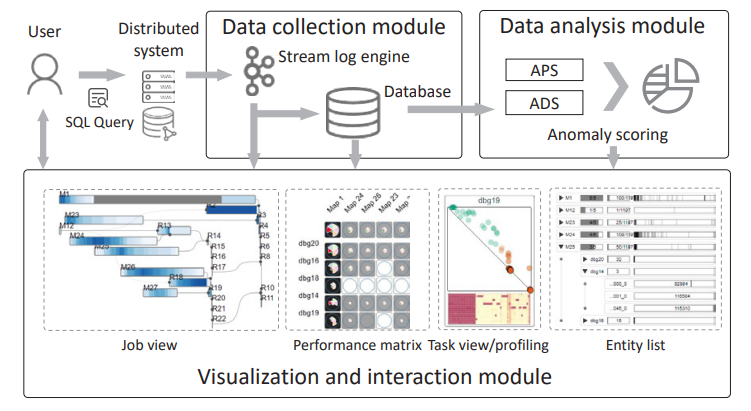

# indicates the corresponding author, and asterisk* indicates equally contributed.

2024
Towards Labeling-free Fine-grained Animal Pose Estimation
In Proceedings of the 32th ACM international conference on multimedia (MM 2024), pp. 2545-2553
, 2024-10 (Melbourne, Australia).
GenUDC: High Quality 3D Mesh Generation With Unsigned Dual Contouring Representation
In Proceedings of the 32th ACM international conference on multimedia (MM 2024), pp. 10862-10871
, 2024-10 (Melbourne, Australia).
Face Super Resolution with a High Frequency Highway
IET Image Processing
(IPR), 18(12), pp.3570-3586, 2024-07.
Learning Target-Aware Vision Transformers for Real-Time UAV Tracking
IEEE Transactions on Geoscience and Remote Sensing
(TGRS), 62, 2024-06.
CheetahTraj: Efficient Visualization for Large Trajectory Dataset with Quality Guarantee
IEEE Transactions on Knowledge and Data Engineering
(TKDE), 36(11), pp. 5737-5752, 2024-04.
Enhancing UAV Tracking: A Focus on Discriminative Representations using Contrastive Instances
Journal of Real-Time Image Processing, 2024-04, 21(3),
p.78.
2023
Data-Scarce Animal Face Alignment via Bi-Directional Cross-Species Knowledge Transfer
In Proceedings of the 31st ACM International Conference on
Multimedia (ACM MM),
pp. 8475-8485, 2023-10 (Ottawa, Canada).
Adaptive and Background-Aware Vision Transformer for Real-Time UAV Tracking
In Proceedings of the IEEE/CVF International Conference on
Computer Vision (ICCV 2023),
pp. 13989-14000, 2023-10 (Pairs, France).
Analyzing and Combating Attribute Bias for Face Restoration
In Proceedings of the Thirty-Second International Joint
Conference on Artificial Intelligence (IJCAI 2023),
pp. 1151-1159, 2023-08 (Macao, China).
QEVIS: Multi-grained Visualizing of Distributed Query Execution
IEEE Transactions on Visualization and Computer Graphics
(TVCG),
2023-10.

Towards Discriminative Representations with Contrastive Instances for Real-Time UAV Tracking
In 2023 IEEE International Conference on Multimedia and Expo
(ICME 2023),
pp. 1349-1354, 2023-07 (Brisbane, Australia).
Rethinking Dual-Stream Super-Resolution Semantic Learning in Medical Image Segmentation
IEEE Transactions on Pattern Analysis and Machine Intelligence
(TPAMI), 10.1109/TPAMI.2023.3322735, 2023-10.
Cascaded Face Super-Resolution with Shape and Identity Priors
IET Image Processing,
17(11), pp.3309-3322, 2023-06.
Robust Partial Face Recognition using Multi-label Attributes
Intelligent Data Analysis,
pp.1-16, 2023-06.
2022
Face2Exp: Combating Data Biases for Facial Expression Recognition
In Proceedings of the IEEE/CVF Conference on Computer Vision
and
Pattern Recognition
(CVPR 2022), pp. 20291-20300, 2022-06 (New Orleans, USA).
Rank-based filter pruning for real-time UAV tracking
2022 IEEE International Conference on Multimedia and Expo
(ICME
2022),
pp. 01-06, 2022-07 (Taipei, Taiwan, China).
SuperVessel: Segmenting High-resolution Vessel from Low-resolution Retinal Image
In Chinese Conference on Pattern Recognition and Computer
Vision
(PRCV 2022) ,
pp. 178-190, 2022-10 (Shenzhen, China).
Effciency and Precision Trade-offs in UAV Tracking with Filter Pruning and Dynamic Channel Weighting
In FSDM ,
pp. 265-273, 2022-11 (Xiamen, China).
Learning Disentangled Representation in Pruning for real-time UAV Tracking
In Asian Conference on Machine Learning ,
pp. 690-750, 2022-12 (Hyderabad, India).
Combating Spatial Redundancy with Spectral Norm Attention in Convolutional Learners
Neurocomputing ,
511, pp.105-116, 2022-10.
2021
Combating Ambiguity for hash-code Learning in Medical Instance Retrieval
IEEE Journal of Biomedical and Health Informatics,
25(10), pp.3943-3954, 2021-05.

Occlusion Invariant Face Recognition Using Simultaneous Segmentation
IET biometrics,
10(6), pp.679-691, 2021-04.
A survey of face recognition techniques under occlusion
IET biometrics,
10(6), pp.581-606, 2021-04.
2020
Joint Face Alignment and 3D Face Reconstruction with Application to Face Recognition
IEEE transactions on pattern analysis and machine
intelligence,
42(3), pp.664-678, 2020-03.

2019
Likelihood Ratio based Loss to finetune CNNs for Very Low Resolution Face Verification
In 2019 International Conference on Biometrics (ICB
2019, Oral),
pp.1-8, 2019-06 (Crete, Greece).

Combined training strategy for low-resolution face recognition with limited application specific data
IET Image Processing,
13(10), pp.1790-1796, 2019-08.

2018
2017

2016
Joint Face Alignment and 3D Face Reconstruction
In Computer VisionECCV 2016: 14th European Conference (ECCV
2016),
pp. 545-560, 2016-10 (Amsterdam, the Netherlands).
Towards resolution invariant face recognition in uncontrolled scenarios
In 2016 International conference on biometrics (ICB 2016),
pp. 1-8, 2016-10 (Halmstad, Sweden).
A Novel Approach to Mugshot Based Arbitrary View Face Recognition
Journal of the Optical Society of Korea,
20(2), pp. 239-244, 2016-04.
2015
Example based 3D Face Reconstruction from Uncalibrated Frontal and Profile Images
In 2015 International conference on biometrics (ICB 2015),
pp. 193-200, 2015-05 (Phuket, Thailand).